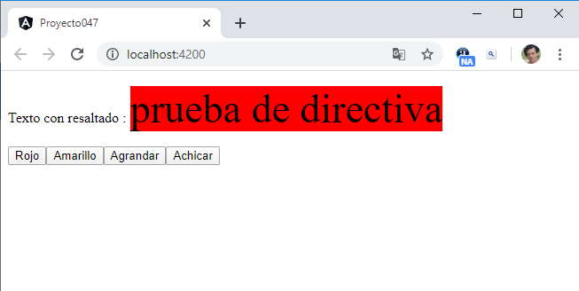

Vimos en el concepto anterior los pasos que debemos dar para crear una simple directiva. Ahora veremos que podemos pasar uno o más datos para personalizar la directiva con datos a enviarle.
Crear una directiva personalizada que se pueda asociar a cualquier elemento HTML y cuyo objetivo sea resaltar el texto que muestra, cambiando el color de fondo por amarillo por defecto o un color que le pasemos a dicha directiva. Agregar un segundo dato a enviar a la directiva que sea el tamaño de la fuente.
Crearemos primero el proyecto
ng new proyecto047
Procedemos a crear la directiva de atributo personalizada llamando a la misma 'resaltado':
ng generate directive resaltado
Se crean dos archivos y se modifica uno.
Por un lado se modifica el archivo 'app.module.ts' haciendo referencia a la clase 'ResaltadoDirective':
import { BrowserModule } from '@angular/platform-browser';
import { NgModule } from '@angular/core';
import { AppComponent } from './app.component';
import { ResaltadoDirective } from './resaltado.directive';
@NgModule({
declarations: [
AppComponent,
ResaltadoDirective
],
imports: [
BrowserModule
],
providers: [],
bootstrap: [AppComponent]
})
export class AppModule { }
Se crea propiamente el archivo que contendrá la lógica de la directiva y tiene como nombre 'resaltado.directive.ts':
import { Directive } from '@angular/core';
@Directive({
selector: '[appResaltado]'
})
export class ResaltadoDirective {
constructor() { }
}
También se crea el archivo 'resaltado.directive.spec.ts' para especificar pruebas unitarias (por el momento no hemos trabajado con este tipo de archivos, no lo modificaremos ni analizaremos):
import { ResaltadoDirective } from './resaltado.directive';
describe('ResaltadoDirective', () => {
it('should create an instance', () => {
const directive = new ResaltadoDirective();
expect(directive).toBeTruthy();
});
});
Procedemos a modificar el archivo 'resaltado.directive.ts' implementando la lógica de nuestra directiva:
import { Directive, ElementRef, Input, OnInit, SimpleChanges, OnChanges } from '@angular/core';
@Directive({
selector: '[appResaltado]'
})
export class ResaltadoDirective implements OnInit, OnChanges {
@Input('appResaltado') colorResaltado!: string;
@Input('tamano') tam: number = 0;
constructor(private elemento: ElementRef) {
}
ngOnInit(): void {
this.actualizar();
}
ngOnChanges(changes: SimpleChanges) {
this.actualizar();
}
actualizar() {
if (this.colorResaltado != null)
this.elemento.nativeElement.style.backgroundColor = this.colorResaltado;
else
this.elemento.nativeElement.style.backgroundColor = 'yellow';
if (this.tam >0)
{
console.log(this.elemento.nativeElement);
this.elemento.nativeElement.style.fontSize = this.tam + 'px';
}
}
}
Se inyecta al constructor un objeto de la clase 'ElementRef':
constructor(private elemento: ElementRef) {
Debemos importar 6 clases, que se almacenan en '@angular/core':
import { Directive, ElementRef, Input, OnInit, SimpleChanges, OnChanges } from '@angular/core';
El método onInit que se ejecuta una vez que la directiva ha sido creada y almacenado los datos en las propiedades appResaltado y tamano. Desde el método onInit llamamos al método 'actualizar'.
El método actualizar modifica el color de fondo del elemento HTML según el dato recibido en la propiedad 'appResaltado' o en el caso que no lo recibe pinta el elemento de amarillo:
actualizar() {
if (this.colorResaltado != null)
this.elemento.nativeElement.style.backgroundColor = this.colorResaltado;
else
this.elemento.nativeElement.style.backgroundColor = 'yellow';
También en el método actualizar si hemos inicializado la propiedad 'tamano' procedemos a modificar el tamaño de la fuente:
if (this.tam >0)
this.elemento.nativeElement.style.fontSize = this.tam + 'px';
El método ngOnChanges se dispara si cambiamos el valor de una propiedad de la directiva, en cuyo caso procedemos a actualizar el color de fondo y tamaño de fuente llamando al método 'actualizar':
ngOnChanges(changes: SimpleChanges) {
this.actualizar();
}
Para probar la directiva debemos utilizar la misma en la componente que Angular nos ha creado por defecto, modificamos el archivo 'app.component.ts':
import { Component } from '@angular/core';
@Component({
selector: 'app-root',
templateUrl: './app.component.html',
styleUrls: ['./app.component.css']
})
export class AppComponent {
colorselect = "green";
tamanoFuente = 30;
cambiarColor(col:string) {
this.colorselect = col;
}
agrandar() {
this.tamanoFuente++;
}
achicar() {
this.tamanoFuente--;
}
}
En la clase definimos 2 atributos llamados colorselect y tamanoFuente que almacenan los valores que se le pasan a las propiedades de la directiva que hemos creado.
También modificamos el archivo 'app.component.html':
<p>Texto con resaltado : <span [appResaltado]="colorselect" [tamano]="tamanoFuente">prueba de directiva</span></p>
<button (click)="cambiarColor('red')">Rojo</button>
<button (click)="cambiarColor('yellow')">Amarillo</button>
<button (click)="agrandar()">Agrandar</button>
<button (click)="achicar()">Achicar</button>
Para inicializar la propiedad que define el color inicial de la directiva le asignamos:
[appResaltado]="colorselect"
En la misma etiqueta 'span' definimos el otro atributo:
[tamano]="tamanoFuente"
Si se presiona el botón con la etiqueta 'Rojo' se ejecuta el método:
cambiarColor(col:string) {
this.colorselect = col;
}
Cuando cambiamos el valor del atributo 'colorselect', se actualiza el color de la etiqueta HTML que tiene asociada la directiva de atributo.
Si ejecutamos la aplicación tenemos como resultado:
Podemos probar esta aplicación en la web aquí.